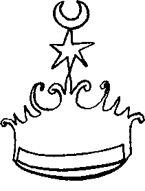

Sağlam bir kahvaltı yapıp, Satılmış’a kedi maması ve kumu da dahil olmak üzere ısmarlayacaklarını ısmarladıktan ve kendisine dev bir fincanda hazır kahve yaptıktan sonra, kitabı kaptığı gibi çalışma odasına yöneldi. Bir zamanlar Banco di Pisa’nın eşyaları satılırken paraya kıyıp aldığı ve hâlâ çok sevdiği çalışma masasının başına geçti. Işığı açtı.
Kitap hemen tamamen kurumuş, kokuları da hissedilir derecede azalmıştı. Alışkanlıkla, sayfalarını ışığa tutarak bakmaya, su damgalarını, filigranları aramaya başladı. Daha ikinci sayfada buldu da. “Boynuzları arasında yıldız tutan öküz.” Buna epeyce sevindi. “Ali Kuma” kâğıtçılarının pek sevdiği ve XVIII. yüzyıla kadar kullanılan bir desen olmasına rağmen, yıldızın köşelerini sayarak kâğıdın yaklaşık olarak 1580 yıllarında Venedik’te üretilmiş olduğunu keşfetti. Yazmanın tarihi de bir anlamda buna bağlı olduğu için, hemen ketebe sahifesine gitti. Evet, kâtip Siyavuş bin İskender, Tanrının yardımıyla Efendi Hazretlerinin bu mahsubu ömrünü elifi elifine 992 yılının mah-ı muharrem ûl- harem’inin gurresi yevm-i sebtinde. yani ilk cumartesi günü tamam ettiğini yazıyordu. O da 1584 yılı Ocak ayının 14’ü demek oluyordu.
“Kolay oldu” diye sayfalan keyifli keyifli, ışık arkada kalmak üzere karıştırırken birden irkildi. Değişik bir filigran gördü. Kendi içinde pek bir şey demek değildi bu tabii. Bu tip kitapların her birinde, her birkaç sayfada bir başka filigran görmek mümkündü. Bazen bunlar ketebe kaydından önceki tarihlere de ait olurlardı. Yani 1584 değil de 1569’dan kalma gibi. Bu durumlarda Suat Ferid “seni muhtekir gidi, gidi namussuz” diye neredeyse şefkatle kâğıt toptancısına söverdi. Yigitbaşıların kâğıt kapanında bütün bir parti kâğıdı kapatıp sonra kâtipler loncası üyelerine azar azar tevzii ettikleri malum; sövmesi kâğıdın üretiliş tarihi ile kullanılış tarihi arasındaki farkın, tabii bir sürü başka şey yanında, yiğitbaşının zulaladığı kâğıdın miktarının da bir göstergesi olmasındandı. İki üç yıllık farklara sesini bile çıkarmaz ama on-on beş yıllık bayat kâğıt durumlarında söverdi.
Şimdi irkilmesi ise ancak ufak bir kısmı görünen filigranın yanında bir rakam, belki bir üç belki yarım bir sekiz olması muhtemel bir işaret görmesindendi. Hemen kâğıt tabakasının diğer yarısının forma içinde nereye rastladığını buldu, ışığa tuttu, baktı ve inanmaz gözlerle kitabı usulca masanın üzerine bıraktı.
Biraz sonra bir daha baktı. Evet yanılma payı olmaksızın gayet açık bir biçimde her iki pençesinde birer kılıç tutan taçlı kartal motifinin tepesinde “Heroic" yazısı, üçlü çatal kuyruğunun altında ise kapı gibi 182 rakamları ve elyazısı büyük E harfine benzeyen bir işaret daha vardı. Diğer yandaki yarım 8 ile beraber 1828 tarihi oluyordu.
Afallamış bir halde en başlara döndü. Tecrübe bu toptan başka kâğıtların da aynı kitapta kullanılmış olabileceğini söylüyordu. Çok aramadı. İki sayfa sonra “tamülaza” bir kartal ve eksiksiz bir 1828 gördü. Kâğıdın yumuşak yapısı bile bunun düpedüz erken XIX. yüzyıl İngiliz işi olduğunu gösteriyor, üzerine sürülmüş birkaç kat ahara rağmen mürekkebin parlaklık ve kuruma derecesi bu sayfalardaki yazılara başka türlü bir görünüm veriyordu.
Başını elleri arasına alarak tefekküre daldı. Yav, nasıl oluyor da oluyor? Cevabını bilmediği sorular ile karşılaştığında hep yapageldiği gibi, kafasında don biçmeden önce biraz daha kumaşı ölçmeye başladı. Sistematik bir şekilde tüm sayfaları ışık ile tarayarak, çıkan su damgalarını ve sayfa numaralarını not defterine kaydederek ilerledi. Başka rakamlar, başka damgalar buldu. “He- raldic 1834”, “Veritas 1739” ve tarihsiz olan, bildiği hiçbir şeye benzemeyen dolayısıyla XV. yüzyıl öncesine ait olmaları hasebiyle herhalde Bizanslı yigitbaşıların tüm sülalelerine ihtiram gösterilmesini gerekli kılan... zil çaldı... Satılmış...
Cüzdanını hazır ederek çıkınca yine şaşırdı. Anette!
“Yoo monsieur sizden para almayı düşünmüyorum...”
Duş almadığı için uzun kahverengi saçları karman çorman, pijama niyetine kullandığı siyah tişörtü ter içinde, kızın yüzüne Yaşar Hanım’ınkiler kadar derin anlamları olan bir bakışla baktı. O ise, iki dirhem bir çekirdek, elinde uzun baget ekmek ve La Terre, okulundan ve alışverişten geliyor olmalıydı.
“Mademoiselle...” diyebildi.
“Yoo, sizi rahatsız etmek istemedim, yalnız nasılsınız diye baktım” dedi kız fısıldayarak, “yani küçük dostumuz ve siz...”
“Küçük dost...?”
“Canım, kediniz işte...”
“Ah... ah... iyi... iyidir.”
Kız iyi akşamlar diyerek kendi dairesine yöneldi. Suat kapının önünde elinde cüzdan kalakaldı... Allahtan Satılmış yüküyle zuhur etti de bu lüzumsuz hareketsizliğinin bir anlamı oldu. Yüzünde öyle garip bir Petro Altinof ifadesi ile, alt dudağını sarkıtarak içeri girdi. Anette... küçük dost... Mamalardan birini açtı, balkonda Effendi’yi beslerken kumunu da hazırladı... Anette!
“Yav çok mu güzel... Bu kız beni niye darmadağın ediyor... Soru mu... Utku?" dedi, kendisiyle dalga geçtiği zamanlarda yaptığı gibi. Perakonak’ta iken herkes onu Utku diye bilirdi... Anette hocaları olsaydı Türk ve Fransız tüm hocalar dahil, malum sebeplerden dolayı bir tek Monsieur Guizot hariç, kızın bütün mektebi peşine takarak Tophane rıhtımından fareler gibi denize dökmesi işten bile değildi. Bir şey çalmasına da gerek yoktu, yalnızca her zamanki gibi yürüse kâfiydi...
Yemekle filan oyalanmadan çalışma odasına döndü. Orada tuhaf bir şeyler vardı. Daha girerken hatırladı. On dakika sonra Anette dahil her şeyi unutmuş yaptığı işleme devam ediyordu.
“Safety 1987,” Ay-yıldız ve eski yazı ile “Türkiya Cumhuriyeti” damgası ile kertenkele veya bukalemun olması muhtemel bir damga arasına sıkışmış bal gibi bir yirminci asır sonu damgasıydı işte.
“Safety 1987 ha...” diye mırıldandı. Ketebe sahifesinden önceki birkaç sayfada durdu. Arkasına yaslandı, iskemlesini geriye kaykılttı, çıkan çatırtılar ile öne döndü. Evet, bunun tek açıklaması vardı: Elinde sahte bir yazma vardı ve oyunbazın birisi nesih bir el ile tahminen 600 küsur sayfayı doldurmuştu.
“Dangalaklık etme Utku kim niye yapsın bunu?” diye sorduğu anda “müzayedeler" diye hemen cevabım da verdi.
“Evet müzayedeler olabilir. Demek resim piyasasından sonra buna da el attılar... Abi haklı adamlar... Aynı müzayedede ‘Hetmanoff, Ayasofya Interior’ ve ‘Şevki Obruk, Ayasofya Interior’ gibi süfli birer başlıkla birbirinin tıpkısı ve hâlâ boya kokan iki resmi gaskallayabiliyorlarsa bunu niye yapmasınlar? Ya da birkaç müzayede önce kendi şirketlerinin ‘Cemil Sultan, Bakır Gravür- Nelidoff, XVIII. asır’ diye sattığı lotu ‘Cemil Sultan, Anonim’ tavsifi ile 80 x 120 ebadında pırıl pırıl yağlıboya haline getirip satıyorlar, bunu da kendilerine ‘Yaglıkçızadeler’ diye bir isim uydurmuş dallamanın dallaması bir familya satın alıp Pro Antica & Nötre Domus dergisinde müftehirane teşhir ediyorsa, niye yapmasınlar?"
Biraz rahatladı. Dolapta bulduğu ıvır zıvırı geveledi. “Kıza pek ayıp oldu” diye düşündü. O kuşku kebikeçi zihnini ufak kara dişleri ile yeniden kemirmeye başladı. Fakat her türlü zaafına ve ürkekliğine karşın beyninin bir köşesine “ya kebikeç” levhasını asla asmadığı için,
“Utku, ne diye? Iliuminasyonu olmayan, cüz olmayan, hilye olmayan, mushaf, şehname olmayan, hiç kimsenin bilmediği, kütüphanelerde nüshası olmayan, var olup olmadığı bile kesin olarak bilinmeyen bir kitabı kim niye uydursun? Utku, dikkat isterim bunu taklit etmek için orijinali gerekir... Utku, tutalım biri o kadar zeki ki tamamen kendi kafasından attı... muhtelif su damgalarını nasıl yaptı, haa? Tutalım ki SEKA depolarında devâir-i devletten müdevver boş kâğıt toptan buldu, ezmine-i kadimden de fırsat bu fırsat dedi, ne diye ‘Safety 1987’ damgası ile insan bu kadar emeği rezil eder? Peki Utku bi yol deyiver bana, nasıl oluyor da ben bunu eskici elinden kola parasına alıyorum, hıı?” diye düşündü. Boşa koydu dolmadı, doluya koydu almadı. Yine yazmanın başına dönmek için salondan kalktı... Bir adım... bir daha ve zil yine öttü. Bu sefer kafasında hiçbir teori olmadan gidip kapıyı açtı. Anette!
Mon Dieu, Anette ama üzerine kendinden teddy bear desenli mavi bol bir flanel pijama geçirmiş, saçlarını omuzlarının üzerine gümrâh bir şekilde bırakmış, elinde Ferid’in çanağından da büyük bir kahve fincanı, buram buram filtre kahve kokan masum, negligé bir Anette...
Üstelik işaret parmağı ile Ferid’in göğsünün çatına bastırarak onu geri geri götüren, koltuğa oturtmadan da parmağını çekmeyen bir Anette...
Reklamcılık günlerinde olsa bunu aynen kayda alır, gelmiş geçmiş en iyi kahve reklamına imza atarak büyük sükse yapardı.
“Ulan zilliye bak harîm-i ismetimize cebren duhûl ha...” diye düşündü, gri gözleri ne kadar izin verirse o kadar şefkatli gülüyordu. Kız neredeyse bunun iki dizinin arasında ve minyon vücudu artık ne kadar izin verirse Ferid’in otururken bile dağlar gibi olan gövdesinin tepesindeydi... Kızın parfümü ve vücut kokulan Suat Ferid’i dünkünden beter mestâne etmişti, çakılmasın diye biteviye sırıtıp sırtarıyordu. Sonunda,
“Ne var küçük haydut?" demeyi becerebildi. Kız diğer koltuğu çekerek tam karşısına oturdu. Saçlarını zifiri bir gece gibi geriye savurdu. Bu saçlar Ferid’e bir şiiri hatırlatıyordu, Maudlaire veya onun yerli mukallitlerinden birine ait olması muhtemel dizeleri bir türlü çıkaramıyordu. Yoksa kendisi mi bir şeyler karalamaya kalkışmıştı kıza olan aşkı bir gün dolup taştığında? Çok da uğraşmadı. Kızın bol yakasından, bu günlerde pek bir moda olan saydam sutyen askısı görünüyor, Ferid’in gözlerine yakamozlar gönderiyordu.
“Bir şey yok yalancılığınızın tescilinden başka!” dedi kız veya Ferid onun cümlesini bu kelimelere münkalib ederek zihnine nakşetti. Elin Belçikalısı Osmanlıcanın hasını nereden bilsin? Sormadı bile, Anette’in devam edeceğini biliyordu.
“Hani büyük dedelerinizden Osman Ağa Birinci Hüsrev zamanında Hollanda’ya gitmiş, yirmi üç yıl kalmıştı?”
“Evet, ne olmuş?”
“Olamaz monsieur olamaz... Birinci Hüsrev yirmi üç yıl hüküm sürmedi ki! Dedeniz döndükten sonra onunla görüşmüş olamaz...”
“Eee?”
“Eh, çok bir ihtimal yok değil mi? Ya Hüsrev’den önceki kimse...”
“Üçüncü Feridun” diye araya girdi. Öfkeli bir yanıt aldı:
“Neye yarıyor ezbere bilmeniz? Kesmeyin beni... Ya Hüsrev’den önceki her kimse onun zamanında gitti ya da dönüp geldiğinde kim varsa onunla görüştü. Ya da yirmi üç yıldan çok daha az kaldı...”
Ferid pek iyi hatırlamıyordu yirmi üç mü demişti?
“Hımm aile tarihimizde yirmi üç yıl yazıyor, ama bir daha bakayım, tarihi metinler de yanlış olabilir, yanılabilir...”
“Ya da tarihçiler yalan söyler..."
Ferid duymazdan gelerek
“Siz nasıl fark ettiniz?” diye bir karşı saldırıya geçti.
“Hiç, tarih hocasına Birinci Hüsrev kaç yıl padişah oldu diye sordum!”
“Aferin o tarih hocasına!"
“Aa yok bilemedi, beraber ansiklopediye baktık..."
Ferid’in içinde bir yerlerde onun kısaca “Asya-ı Vustâ” diye adlandırdığı bir kıskançlık damarı kımıldadı. “Fettan bunu bilerek yaptı, şu beraber kelimesini vurgulayışa bak!” diye içinden geçirdi. “Hayır, bu tuzağa düşülmeyecek, ‘adı ne’ türü bir soru sorulmayacak...” Gülümsemeyi sürdürdü:
“Başka yalanlarımı da buldunuz mu?”
“Hayır... Yalnızca kaynağınıza bakıp doğrusunu söyler misiniz? Merak ediyorum.”
Suat Ferid bunu bekliyordu.
“Şimdi zaten onun üzerinde çalışıyordum, çalışma odama gelin, beraber bakalım” diye kendince vurgulu bir “beraber” ile anında misilleme yaptığı için memnun, ama kız Belçikalı olduğu, Belçikalı kızlara da “ruh-u revanım, tende canım, canda cananım, kadem rencide buyrun gidelim” denemeyeceği için hafif somurtuk, öne düşerek Anette’i çalışma odasına götürdü.
Anette’in dikkatini çeken şey 20 küsur metrelik uzun ve müstakil bir oda denebilecek kadar geniş koridorun da her iki duvarının binlerce kitap ile dolu olmasıydı. Çalışma odasında, Duvduvani Efendi masanın üzerinde açık halde duruyordu. Ferid, bir aile tarihinde olması gerektiği gibi başlara, yani iyi tanınan ilk cedlerin bulunması muhtemel olan bir yerlere, fakat “ah... aile sadece XVIII. yüzyıldan mı başlamış" denmesin diye baştan 40- 50 yaprak ihtiyat sayfası da bırakarak başlara gitti. Tabii ki yazı nesih de olsa ancak bildiğini okuyacaktı ama okuyor izlenimi vermek için kitabın üzerine eğildi,
“Bismillahûrrahmanürrahim Peynircizade Osman Efendi’nin Sultan Hüsrev asrında Felemeng-i Pezevenk diyarına gidüp yirmi üç sene müddeti kaldığıdur" diye kekeleyerek başladı, bütün vücudu titremeler ve daha beter kekelemeler ile sarsılarak devam etti.
Çünkü “okuyorum” düzeni ile giriştiği işi aynen ve layıkıyla bi-hakkın eda ediyor, sular seller gibi, sanki Latin alfabesi ile yazılmışçasına, istemese bile okuyordu. Kekeleyerek geri çekildi. Bütün vücudu yaprak gibi titriyordu. İskemlenin ve Ferid’in omuzları üzerinden kitaba bakan Anette de geri çekildi, benzi sapsan olmuş, lacivert gözbebekleri neredeyse tüm gözlerini kaplamış, tarifsiz bir korku ile Ferid’e baktı. Ferid güçlükle
“Sana ne oluyor...?” diyebildi.
Kız cevap vereceğine kitabı kendisine çevirdi ve Ferid’in kaldığı yerden,
“Efendi-i mûmâileyh memâlik-i Osmaniyenin enva-i tür peynirinden numuneler alarak bir sefineye irkâb ile Felemeng diyarına azimet içün...” diye devam ederek aniden sustu. Ferid
“Sen Osmanlıca biliyor muydun?” diye sormadı bile.
Kızın Osmanlıca bilmediğini biliyordu, daha önceden gelen bir bilgi değil, hemen orada, anında kazandığı bir bilgiydi bu. Çünkü doğal olarak, yüksek sesle okuduğundan daha fazlasını içinden okumuş, “içün”e gelince bırakmıştı. Kız, kendisi metinden ne kadar okumuş ise ancak o kadarını okuyabiliyordu.
“Ben... ben... bu yazıyı bilmiyorum ki...” diye kekeledi.
Ferid,
“Biliyorum... yorma kendini” diye cevap verdi. Sayfa 52B diye kendi kurşunkalemiyle yaptığı işarete baktı. Sabah yatmadan önce son bir gayretle, aslında numarasız olan kitabı, ketebe sahifesi hariç olmak üzere numaralamış, A ve B’li tam 652 sayfa olduğunu görmüştü. Bu normal bir sistemde 1304 sayfa demekti... Sayfayı not etti. Bir deneme daha yapmak istedi. Sonlara doğru gitti, hiç aranmadan herhangi bir sayfadan başladı:
“Cennetmekân Sultan Hüsrev Han-ı Sâîis asrının Ulema ve fuzalâsından Peynircizade mûfti-i enam Sadık Abid Efendi Hazretleri’nin telif eylediği...”
Daha fazla okumadan tekrar 52B’ye gitti. Başlık şu hale girmişti:
“Bismillahirrahmanûrrahim Peynircizade Osman Efendi’nin Sultan Hüsrev-i evvel asrında..." Gerisi aynıydı,
“Biliyor musun Anette, Osmanlı tarihinde bir Üçüncü Hüsrev hiç olmadı, yalnızca denemek için okudum, yani yazdım!"
İkisi de bundan sonra yapılacak şeyi biliyorlardı. Bakıştılar...
Soğuk terler basmıştı her ikisini de, birden ani bir vurgun yemiş gibi sarsıldılar... Kanlarını donduran bir ecinni çığlığı sinirlerini altüst etti! Zavallı Effendi odanın dışında kapının önünde acıklı bir şekilde miyavlıyordu... Tek başına olsa Ferid çoktan dışarı uğramış, terliği hayvanın kafasına ekleştirmişti. Zoraki gülerek,
“Kerata korkuttu bizi” dedi sanki zaten hiç dehşete kapılmamışlar da sadece biraz dalmışlar havasında.
Anette dışarı çıktı:
“Kızım... bebek... Fendi... acıktın mı fıstık” diyerek hayvancağızı mama vermeye götürdü. Geri geldiği zaman hâlâ kedi kedi kokuyordu.
“Alma şu pisi kucağına... Yani bir yıkayalım da... öyle al,” dedi Ferid, sonra kızı kolundan tutarak salona neredeyse sürükledi. Kendisini koltuğa yığarken fısıldadı:
“Biliyor musun Anette seni de aslında ben yazmış olabilirim!”
Anette bu ihtimali biliyormuş gibi,
“O önemli değil... Ama lütfen kitaptan uzak dur... Bundan sonra yazacakların benim, senin ve herkes için çok... çok daha önemli, lütfen...” diyerek hıçkırmaya başladı.
Ferid içinden, “bunu ben yazmış olsam kesinlikle ağlamayan bir kız yazardım” diye düşündü. Oldum olası, ağlayan insanlardan hazzetmezdi. Ama sonra bir daha düşündü:
“Peki ya hür iradeli bir kız yazmışsam?” Bu düşünceyle yine titredi. Kitabı daha “dün” aldığını adı gibi hatırlıyordu... Ama ne kıymet-i harbiyesi vardı bu koşullar altında kendi hatırlamasının, kendi hafızasının?
Dün, bugün, yarın. Bunların da bir hükmü var mıydı? Ya herhangi bir zamanda, kitabı dün aldığını yazıvermişse? 500 Ünlü Türk ansiklopedisinin ilk cildini bulup getirdi. “Hüsrev III” maddesine baktılar. Tek bir cümleden oluşuyordu:
“Zamanında meşhur bilim adamlarından müftü denen hayvan Peynircizade Sadık Abid Efendi’nin kültür tarihimiz açısından önemli bir eser yazdığı bilinmektedir.”
Ne saltanat yılları belli, ne doğum ve ölüm tarihleri. Ne de yazılan önemli eserin adı ve türü. Anette,
“Okuduğumu ben bile anlıyorum. Orada yazılandan farklı biraz. Ayrıca yazılan eserin kültür tarihi açısından çok önemli olduğu söyleniyor, yalnız Osmanlıca bilmiyorum ama aile tarihiniz niye hayvan desin bir atanıza?” diye metin detektifliğine kalkıştı.
“Müdekkikan ve müteverrihan”dan Suat Ferid ise gördüklerinden hiç etkilenmemişti. Bu tip ansiklopedileri biliyordu. Yazarlara kelime başına para verdikleri için onlar da birtakım klişeler ile metni zenginleştiriyorlardı. Kendi okuduğu metin “telif eylediği” ifadesi ile bittiği için, biraz mürekkep yalamış birinin telif edilenin bir kitap olduğunu tahmin etmesi işten bile değildi. Ulemadan Peynircizade de 19. senfoniyi telif edecek değildi ya! Bir sultanın saltanatına ait yalnız ve yalnız bu kitap biliniyor ise, muhakkak ki kültür tarihimiz açısından önemli olmalıydı. Basit bir çıkarım ve birkaç da fazla kelime, fazla lira. Onu da geç. Demek ki bu maddenin sefil yazan bir şekilde Suat Ferid’in Duvduvani’de yazdığını okumuş...
Ama muhayyel de olsa bir atasına hayvan denmesi ağrına gitmişti. Aklına “sadeleştirme dâhileri” geldi. Raflardan birine oturduğu yerden uzanıp bu tür sadeleştirme yâranının kullanması muhtemel olan ince bir Osmanlıca-Türkçe sözlük aldı. “Enam” sözcüğüne baktı. Bilinen anlamının yanında, ikinci bir anlamı da vardı. “Yaratık” olarak verilmişti. Taşlar yerine oturuyordu, bu hal-i tevahhuşta bile gülümsedi. Maddeyi kim yazdı ise, ilk anlamını bilmediği veya tercih etmediği için ikinci anlamını seçmiş, “yaratık” olan şeyin de ancak “hayvan” olacağına karar kılmıştı. Yine de kendi içinde doğru bir çevirinin “hayvanların müftüsü" olması gerekirken, madde yazarı bir dedüksiyon daha yapmış, hayvanlara müftülük eden bu keratanın kendisinin de bir hayvan olması gerektiğine karar vermişti. Geriye bir tek “müftü denen hayvan"ın nasıl olup da “bizim" kültür tarihimiz açısından önemli bir eser yazabildiği sorusu kalıyordu ki, eh, bunu da başka bir tarih allamesi elbette tez zamanda halledecekti. Duvduvani Hanım Efendi’nin feministliği üzerine yazılmış birkaç tez aklına geldi, yine gülümsedi.
Anette ise buz gibi kahvesini yudumlarken iliklerine kadar ürperiyor, Suat Ferid’in her ne pahasına olursa olsun önlenmesi gereken bir mühlik deli olduğunu düşünüyordu. Daha doğrusu kıza bakan Ferid, kendisi hakkında bu mealde düşünüldüğünü anlayabiliyordu. Anahtar kelime “mühlik” idi, elin Brüksellisi niye bu terimlerle düşünsün? Dolayısıyla bu düşünce kendisinin olmalı diye tevehhüm etmekteydi Suat Ferid. Başını kaldırarak,
“Sen üşüdün doğruca yatağıma git, uyu," diye bir direktif verdi.
Kız ayağa kalktı. Hiç sesini çıkarmadan içerilere çekildi. Yatak odasının yerini bile sormamıştı. Suat Ferid kendini zorlamasına rağmen kızın bu kez ne düşündüğünü bulamadı. Niye kendi evine gitmemişti, o bile belli değildi.
Saatler sonra hâlâ salonda son iki/dört günde yaşadıklarını düşünüyor, bir açıklama yapmaya çalışıyordu. “Hayat ne tuhaf’ diye düşündü. Dört küsur yıldır merdiven aralığında, asansörde konuşabilmek, dolayısı ile evden çıkışlarını yakalayabilmek için kapının göz deliğinden kör olmacasına kolladığı Anette kendi evinde, çarşaflan en az üç haftadır değişmemiş ama o canibe çok da uğramadığı için o kadar da kirli olmayan yatağında yatıyor ve kendisi yine salonda o kitabı yakalayıp, berikini bırakmakla iştigal ediyordu.
Sabahın ilk ışıkları camlara vurunca Suat Ferid “enam” sözünün daha zengin anlamlarını veren baba sözlüklerden birini kapayarak hiç olmazsa bir duş almaya karar verdi. Alt katın banyosunda sıcak, rahatlatan, nefis bir duş aldı. Yumuşacık nefti bir gömlek ve siyah bir kadife pantolon seçti. Olabildiğince az gürültü yaparak salona geri döndüğünde Anette’i de kalkmış, elinde yine kahve çanağı, bacaklarını karnına doğru çekmiş, koltuğun birine tünemiş halde buldu. Kızın az uyumaktan şişmiş, yumru yumuk olmuş gözlerine baktı.
“İşine geç kalmıyor musun?" diye sordu.
“Bugün cumartesi" diye uykulu bir cevap aldı.
“Ah... Benimle kahvaltı et o zaman!"
“Benim kahvaltım bu kadar" diye kahvesini işaret etti kız.
“Hımm, benim bir şeyler yemem gerek. Uykusuzluğa ancak böyle dayanıyorum... Bugün uzun bir gün olacak... Ümraniye’de Sahaf Hami’ye gideceğim, kitabı da götüreceğim."
Anette “kim bu” diye sormadı bile. Yalnız son derece kararlı bir sesle,
“Ben de geliyorum” dedi.
Cevap beklemeden Suat Ferid’i beş kaynamış yumurta, bir paket pita, yarım kalıp beyazpeynir, yarım kavanoz Bergamot reçeli, sayısız zeytin ve çaydan oluşan “müstehcen” kahvaltısıyla baş başa bırakarak, hazırlanmak üzere kendi dairesine çekildi.